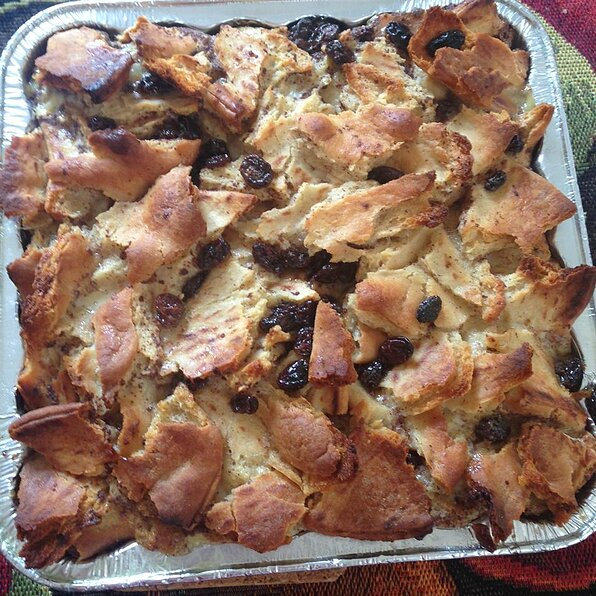

Bread Pudding

Description
My family LOVES bread pudding, and this recipe is one that I have fine
tuned to their taste. I have to double this recipe, and bake it in a 9x13
inch pan for my family! It's great for breakfast or dessert and is
delicious with milk poured on top! Enjoy!
Ingredients
- 6 slices day-old bread
- 2 tablespoons butter, melted
- 4 eggs, beaten
- 2 cups milk
- ¾ cup white sugar
- 1 teaspoon ground cinnamon
- 1 teaspoon vanilla extract
Steps
- Preheat oven to 350 degrees F (175 degrees C).
-
Break bread into small pieces into an 8 inch square baking pan. Drizzle
melted butter or margarine over bread. If desired, sprinkle with
raisins.
-
In a medium mixing bowl, combine eggs, milk, sugar, cinnamon, and
vanilla. Beat until well mixed. Pour over bread, and lightly push down
with a fork until bread is covered and soaking up the egg mixture.
-
Bake in the preheated oven for 45 minutes, or until the top springs back
when lightly tapped.